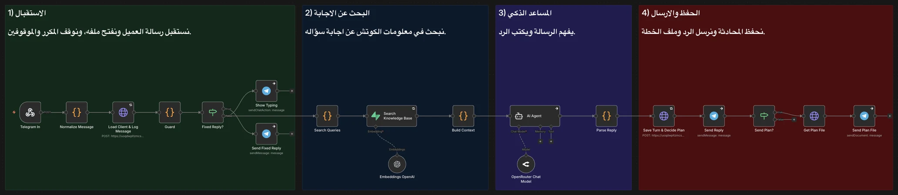

مدرب لياقة على تيليجرامFitness coach on Telegram
Coach Galy
مساعد يعمل نيابة عن مدرب لياقة: يستقبل المتدرب، يسجل بياناته، يرسل له الخطة التي أعدها المدرب، ويجيب أسئلته اليومية من معلومات المدرب نفسه.An assistant that works on a fitness coach's behalf: it welcomes the trainee, records their details, sends the plan the coach prepared, and answers daily questions from the coach's own information.
نسخة تجريبية للعرض. لا يحصل أي مبلغ، والخطط أمثلة وليست نصيحة طبية.A demo. No payment is taken, and the plans are examples, not medical advice.
نسخة من محادثة سابقة مع المساعد.A copy of an earlier chat with the assistant.
- القناةChannel
- تيليجرام، ومصمم ليعمل على واتساب أيضاTelegram, and designed to run on WhatsApp too
- اللغاتLanguages
- العامية المصرية، الإنجليزيةEgyptian Arabic, English
- الأدواتBuilt with
- Telegram Bot API, n8n, Supabase
ما يستطيعه المتدربWhat a trainee can do
- يعطي اسمه ووزنه وهدفه، والمساعد يقرؤها عليه ليؤكدها قبل إرسال الخطةGive their name, weight and goal; the assistant reads them back for a yes before sending the plan
- يستلم خطته ملفا واحدا: التمرين والتغذيةReceive their plan as one file: training and food
- يسأل عن طريقة أداء تمرين أو عن بديل لهAsk how to do an exercise, or for an alternative to it
- يسأل عن بدائل الطعام في خطتهAsk about food swaps within their plan
- يطلب التحدث إلى المدرب، فيصله رقم الفريقAsk for the coach and get the team's number
كيف بنيHow it's built
- المساعد لا يؤلف خطة: الخطط ملفات أعدها المدرب مسبقا، والمساعد يسلمها فقط.The assistant doesn't write a plan: the plans are files the coach prepared beforehand, and the assistant only delivers them.
- قاعدة البيانات هي التي تحدد الخطة وترسلها، لا النموذج. وبعد الإرسال لا يغير الخطة إلا المدرب.The database decides which plan goes out and sends it, not the model. Once sent, only the coach changes it.
- حالات تعود إلى المدرب نفسه: عند ذكر حمل أو إصابة مشخصة أو وزن خارج الحدود المعتادة، لا ترسل الخطة ويحال المتدرب إلى المدرب.Cases that go to the coach himself: when a trainee mentions pregnancy, a diagnosed injury or a weight outside the usual range, no plan is sent and the trainee is referred to the coach.
- التعامل مع الإساءة على درجات: تنبيه، ثم طلب اعتذار، ثم حظر مؤقت.Abuse is handled in steps: a warning, then a request for an apology, then a temporary block.
- نص الرد محايد للقناة، وكل قناة تحوله إلى تنسيقها، فينتقل المساعد إلى واتساب دون إعادة بنائه.The reply text is channel-neutral and each channel converts it to its own formatting, so the assistant can move to WhatsApp without a rebuild.
مسار العملThe workflow
المسار الذي يشغل المساعد على n8n، من وصول الرسالة إلى الرد.The n8n workflow that runs the assistant, from the incoming message to the reply.

العرض التجريبي والتشغيل الفعليThe demo and real use
في العرض التجريبي خمس خطط جاهزة، من 1500 إلى 3500 سعر حراري، ويحدد النظام إحداها بحسب وزن المتدرب وهدفه.The demo holds five ready plans, from 1,500 to 3,500 kcal, and the system picks one from the trainee's weight and goal.
في التشغيل مع مدرب حقيقي يحتفظ المدرب بقائمة عملائه، ويربط كل عميل برقم هاتفه بالخطة التي أعدها له، فيسلم المساعد كل متدرب خطته هو.With a real coach, the coach keeps a client list and links each client's phone number to the plan made for them, so the assistant hands each trainee their own plan.
الحظر في العرض مدته دقيقة واحدة.In the demo a block lasts one minute.